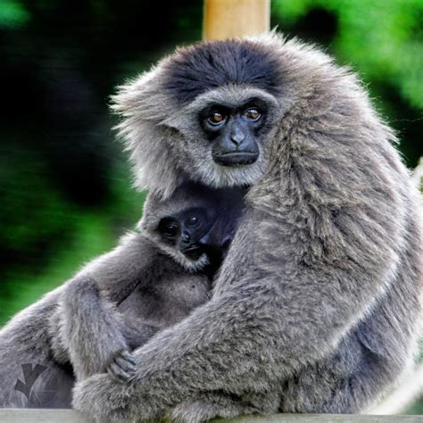
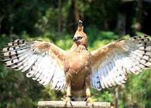

Pulau Jawa
Pulau Jawa, sebagai pulau dengan populasi manusia terbesar di Indonesia, memiliki sejarah panjang dalam interaksi antara manusia dan alam. Meskipun terkenal sebagai pusat kegiatan ekonomi dan politik, Pulau Jawa juga memiliki kekayaan fauna yang luar biasa. Namun, perkembangan infrastruktur, urbanisasi yang pesat, serta ekspansi lahan pertanian dan industri telah menekan kelestarian lingkungan alam, khususnya keberadaan satwa-satwa liar yang tinggal di hutan-hutan Jawa.
Satwa-satwa langka di Pulau Jawa seperti Harimau Jawa, yang dinyatakan punah sejak beberapa dekade lalu, serta Badak Jawa dan Elang Jawa yang masih bertahan namun dalam jumlah yang sangat kecil, menjadi simbol dari krisis keanekaragaman hayati di pulau ini. Populasi satwa langka yang tersisa menghadapi ancaman serius akibat fragmentasi habitat, perburuan liar, dan penurunan kualitas ekosistem. Misalnya, Badak Jawa (Rhinoceros sondaicus) yang saat ini hanya tersisa di Taman Nasional Ujung Kulon, mengalami tekanan luar biasa akibat ruang hidup yang terbatas dan ancaman bencana alam.
Keberadaan satwa-satwa langka ini tidak hanya penting bagi keseimbangan ekosistem, tetapi juga memiliki nilai ilmiah, budaya, dan pariwisata yang tinggi. Namun, tantangan yang dihadapi dalam melindungi satwa-satwa ini sangat besar, terutama dalam hal keterbatasan lahan konservasi dan minimnya kesadaran masyarakat akan pentingnya melestarikan keanekaragaman hayati.
Berikut merupakan penjelasan singkat nama hewan dan habitatnya di pulau Jawa:
1. Owa Jawa

Owa Jawa (Hylobates moloch) adalah primata endemik yang hanya ditemukan di pulau Jawa,
khususnya di wilayah pegunungan dan hutan tropis di Jawa Barat dan Jawa Tengah.
Owa Jawa merupakan bagian dari keluarga kera kecil (gibbon), dan dikenal karena kemampuan
mereka bergerak dengan cepat dari pohon ke pohon menggunakan lengan panjang, sebuah gerakan yang disebut brachiation.
Ciri-ciri Owa Jawa:
- Ukuran tubuh kecil hingga sedang, dengan berat sekitar 5-8 kg.
- Tidak memiliki ekor, seperti halnya kera pada umumnya.
- Suara panggilan mereka sangat khas, melengking tinggi, digunakan untuk berkomunikasi dengan kelompoknya dan menandai wilayah mereka.
Owa Jawa adalah hewan sosial yang hidup dalam kelompok kecil yang terdiri dari pasangan monogami dan anak-anaknya. Mereka sangat teritorial
dan biasanya aktif di siang hari. Hewan ini memainkan peran penting dalam ekosistem hutan sebagai penyebar biji-bijian, sehingga menjaga
keseimbangan hutan.
Status konservasi: Owa Jawa terdaftar sebagai spesies terancam punah oleh IUCN. Penyebab utama dari penurunan populasi mereka adalah
hilangnya habitat akibat deforestasi untuk pertanian, penebangan liar, dan pembangunan. Selain itu, perburuan ilegal untuk dijadikan
hewan peliharaan juga menjadi ancaman serius bagi kelangsungan hidup mereka.
2. Elang Jawa

Elang Jawa (Nisaetus bartelsi) adalah burung pemangsa endemik Pulau Jawa dan sering dianggap sebagai
simbol satwa langka Indonesia. Elang ini memiliki kesamaan dengan lambang Garuda, sehingga sering disebut sebagai
“Garuda hidup”. Elang Jawa tinggal di hutan pegunungan dan dataran rendah yang rimbun, terutama di daerah yang sulit
dijangkau manusia.
Ciri-ciri Elang Jawa:
- Ukuran tubuh sedang dengan panjang sekitar 60-70 cm.
- Bulu coklat gelap di bagian atas tubuh, dengan bagian bawah yang lebih terang.
- Jambul yang mencolok di kepalanya, terdiri dari empat helai bulu hitam yang menonjol ke atas, yang menjadi salah satu ciri khasnya.
- Paruh melengkung tajam dan mata yang berwarna kuning tajam.
- Makanan utama elang ini adalah mamalia kecil seperti tikus, tupai, dan kadang-kadang reptil atau burung lain.
Elang Jawa dikategorikan sebagai terancam punah (Endangered) oleh IUCN karena populasi yang sangat terbatas dan penurunan jumlah yang disebabkan
oleh perusakan habitat, terutama akibat penebangan hutan. Diperkirakan hanya ada sekitar 300-500 ekor yang tersisa di alam liar. Hilangnya hutan
alami di Jawa adalah ancaman terbesar bagi kelangsungan hidup Elang Jawa, terutama karena mereka memerlukan area hutan yang luas untuk berburu
dan bersarang.
Elang Jawa dilindungi oleh undang-undang di Indonesia, dan beberapa kawasan konservasi di Jawa, seperti Taman Nasional Gunung Gede Pangrango
dan Taman Nasional Meru Betiri, menjadi tempat perlindungan bagi spesies ini. Program penangkaran dan upaya edukasi masyarakat tentang
pentingnya pelestarian habitat juga sedang dilakukan untuk menyelamatkan burung ini dari kepunahan.
3. Badak Jawa

Badak Jawa (Rhinoceros sondaicus) , juga dikenal sebagai badak bercula satu, adalah salah satu spesies badak
yang paling langka dan terancam punah di dunia. Spesies ini dulunya tersebar luas di wilayah Asia Tenggara, namun saat
ini hanya tersisa di Taman Nasional Ujung Kulon, di ujung barat Pulau Jawa. Populasi badak Jawa diperkirakan hanya sekitar
70 individu, menjadikannya salah satu spesies dengan jumlah paling sedikit di dunia.
Ciri-ciri Badak Jawa:
- Cula tunggal kecil, biasanya berukuran kurang dari 25 cm, terutama pada jantan. Betina umumnya tidak memiliki cula yang jelas.
- Kulit tebal dengan lipatan-lipatan besar yang membuatnya tampak seperti memiliki perisai alami.
- Ukuran tubuh sedang, dengan berat sekitar 900 hingga 2.300 kg.
- Badak Jawa cenderung bersifat soliter dan pemalu, lebih sering aktif di pagi hari atau sore hari saat suhu lebih sejuk.
Badak Jawa hidup di hutan hujan tropis dan hutan dataran rendah yang lembap, seperti yang ditemukan di Taman Nasional Ujung Kulon.
Mereka memakan tumbuh-tumbuhan, seperti daun, ranting, buah, dan kulit kayu. Meskipun badak Jawa adalah hewan besar,
mereka sangat pandai menyembunyikan diri di hutan yang lebat, sehingga jarang terlihat oleh manusia.
Badak Jawa diklasifikasikan sebagai terancam punah (Critically Endangered) oleh IUCN. Penyebab utama penurunan populasi mereka
adalah perburuan untuk diambil culanya dan hilangnya habitat akibat penggundulan hutan. Namun, dengan perlindungan ketat di
Ujung Kulon, perburuan sudah sangat berkurang, dan tantangan utama kini adalah memastikan habitat tetap aman dari gangguan
manusia dan bencana alam.